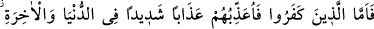
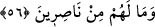

Şöyle bir rivâyet vardır: Îsâ (a.s.) Deccal zamanında gökyüzünden âdil bir hakem
olarak inecek, haçı kıracak, domuzu öldürecek, cizyeyi kaldıracak, malı
bereketlendirecek, öyle çoğaltacak ki, kimse sadaka kabul etmeyecektir.
O’nun zamanında bütün dinler kalkacak, sadece İslâm kalacaktır. Îsâ (a.s.) Deccal’ı
öldürecek, onu öldürdükten sonra Araplardan bir kadınla evlenecek, çocuğu olacak.
İnişinden itibaren kırk yıl yaşadıktan sonra ölecek, müslümanlar cenâze namazını
kılacaklar. Çünkü O, bu ümmetten olmak için duâ etmiş, Allah da duasını kabul etmişti.
“Sana tâbi olanları, kıyâmet gününe kadar küfredenlerin üstünde tutacak benim.”
Îsâ’ya tâbi olanlar seni yalanlayanlar değil, müslümanlardır. Her ne kadar şerîatları dış
görünüş itibariyle birbirinden farklılık arzetse de... Allah Teâlâ müslümanları Yahudi
ve hıristiyanlardan seni yalanlayanların üstüne çıkaracaktır. Onu yalanlayanlardan bir
kısmı onun yolunu izlediği halde ona hile yapmıştır. Ehl-i İslâm ise izzet, kuvvet ve
huccetle daima onların üstündedir.
“Kıyâmet gününe kadar” buyurulması, Îsâ’ya tâbi olanların üstün kılınışının son
vaktini bildirmektir. Bu üstünlük o gün biter ve kâfirler zilletten kurtulurlar mânasına
değil, müslümanlar bu sona kadar onlara üstün gelirler, ondan sonra da Allah onlara
dilediğini yapar, demektir.
“Sonra dönüşünüz yalnız bana olacaktır.” Yani öldükten sonra dirilerek dönüşünüz
banadır. Âyetin lâfzındaki “sizin” mânasına gelen zamir, Îsâ (a.s.)’a ve ona tâbi olanlara
ve kâfirlere âittir. İltifat yoluyla muhataplar gâibe üstün tutularak böyle buyurulmuştur.
Çünkü tebşîr ve inzarda bu üslûb daha beliğdir.
56. İnkâr edenler var ya, onları dünyâ ve âhirette şiddetli bir azaba
çarptıracağım; onların hiç yardımcıları da olmayacak.
“İşte (o gün) aranızda hakkında ihtilâf etmekte olduğunuz şeylerin hükmünü ben
vereceğim. (Fakat) Küfredenlere gelince, ben onları dünyada da âhirette de en çetin
bir azapla azaplandıracağım.” Onlara hiçbir yardımcı da yoktur! Onlara dünyada
kılıçla, köle edilmekle, kendilerinden cizye alınmasıyla, türlü hastalık ve musîbetlerin
kendilerine ulaştırılmasıyla azap edeceğim. Çünkü bunlar kâfir hakkında azap, mü’min
hakkında ise sevaba vesîledir. Âhirette de ateşle azap edeceğim. “Onların” iki dünyada
da Allah’ın azabından kurtaracak “hiçbir yardımcıları yoktur.” Burada “yardımcılar”ın
çoğul sîgasıyla gelmesinin sebebi, çoğul olan “onlar” cem’î zamirinin mukabelesi
içindir. Yani onlardan hiçbirinin hiçbir yardımcısı yoktur, demektir.